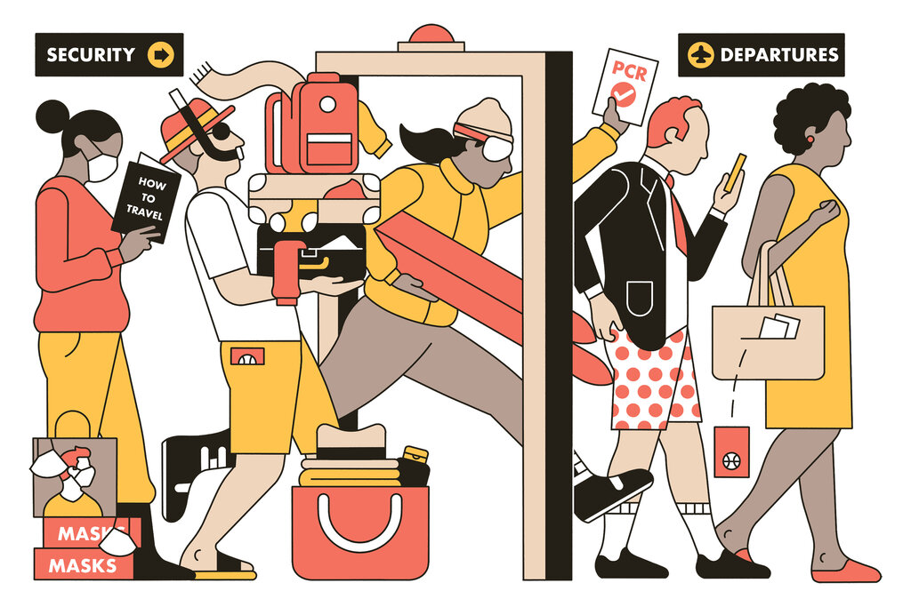

Forgetting passports but packing full-sized liquid carry-ons: As parts of the world open up, travelers are fumbling and stumbling in ways large and small, usually while laughing about it.
Forgetting passports but packing full-sized liquid carry-ons: As parts of the world open up, travelers are fumbling and stumbling in ways large and small, usually while laughing about it. 5 Credit...Andrew Joyce July 2, 2021 Kira Segal is a supremely organized traveler, regularly making lists of must-brings and to-dos for vacations with her husband and four children, whose ages range from almost six months to seven years old. In March, after the grown-up